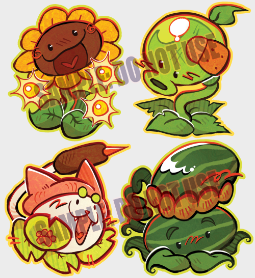
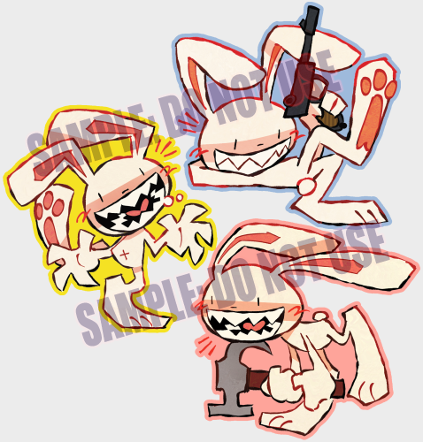
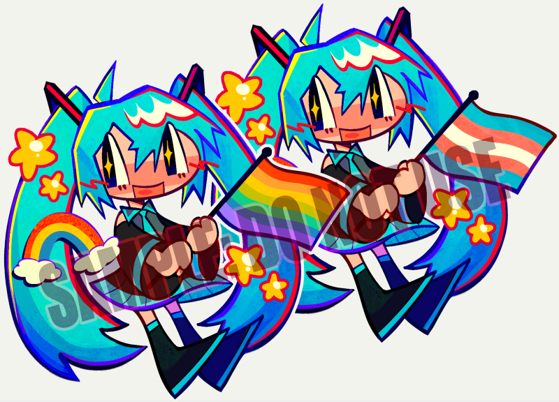
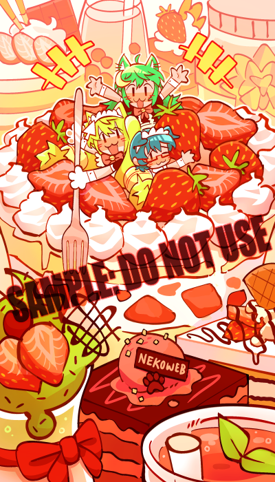

————— 2025/06/08 —————
Hello!
As of writing this, I have about 8500 pageviews, 124 claps and 19 guestbook comments! It's nothing big but it's good to know that my efforts in putting this site together was worth it and that it regularly gets traffic. I'm getting an average of 80 views daily. That's nothing compared to social media but given the nature of how the indie web works I'm pleasantly surprised that people manage to find me here.
I've been chipping away at it for a while now and it's finally done; I've renovated + added new things to the site! And bought a cool new domain for it... The frame is bigger and there's new pages on the left. The biggest update is that I have a small character hub now! I've always been very shy with sharing my OCs with people so I'm hoping this can help alleviate some of that shyness. There's also a photo log for me to share the photos I took. There's an animation tab but I still have to make a Youtube account to upload all my previous (and upcoming) animations so I can link them properly. I also finally updated my itch.io account so I can upload my sketchbook scans on there! I wanted to host pdf files myself on github but they restrict files over 100mb so I had to make do, and I also like that people can tip me on itch...
I'm also planning to sell some stickers I'm making online! I already sent them to the manufacturer but since it's a small local one it's gonna take a while. I'll probably get my items later in the year but once I do they'll be up on my ko-fi shop. I'll announce again when they are finally available. Here's a preview of a few of them!



Lastly I'm one of the merchandise artists on Nekozine!!! I only really made an art print for it but you guys should check it out and support the project!

When I made this website I never planned to add a section for writing because I'm bad at writing. But things change and now I'm here. I want to thank everyone who regularly looks at my art and leave comments on my guestbook. It's very motivating! I've been on and off learning basic HTML since 2023. I've made several personal websites that never took off/I got lazy to update, so my only main objective when making this one was to keep it extremely simple as an art archive so I have the drive to keep working on it. And it worked! I'm still maintaining this site, months later. I hope to continue working on this site for the foreseeable future.